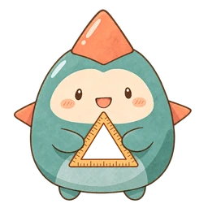

さんかくると ひろば
ひろば Lv 4 ・ できた 18
128
2
/ 3
34
%
↺
まわす
↻
まわす
＋
ちかく
−
とおく
⌂
もどす
きょうの もくひょう
2 / 3
1かい れんしゅうする
+1
なかまに あいに いく
♥
たんげんを 1つ「できた」に
+2
どんぐりを うけとる
きょうの どんぐり
14 / 20
たんけんに いく
チケット 1まい・2〜3ぷん
2
もようがえ
おく・ぬる
きせかえ
ぼうし・もちもの
ずかん
シール 41 / 120
えらんで しまを タップ
＋ に おく・マスを ぬる
き
5
はなだん
8
ベンチ
6
ふんすい
12
みちを ぬる
1
いけを ぬる
2
くさに もどす
0
ひろば
なかま
ずかん
おみせ